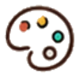
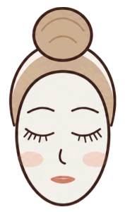
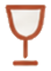
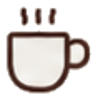
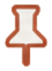
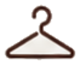

測驗結果與衣櫥資料會自動保存在這台裝置上，下次打開不用重做。需要時可在這裡重置。
色彩、身形、臉型各自獨立測驗，但資料會互相連動，完成越多，推薦頁就越精準。

結合你的色彩、身形、臉型，加上場合、天氣與氣質目標，輸出今天可以直接運用的公式。

完成色彩、身形、臉型測驗後，這裡才能組合出真正屬於你的公式。目前已完成 0 / 3 項。


完成測驗後，這裡會生成一張你的「心法記憶卡」，逛街時拿出來對照就知道該不該買。

